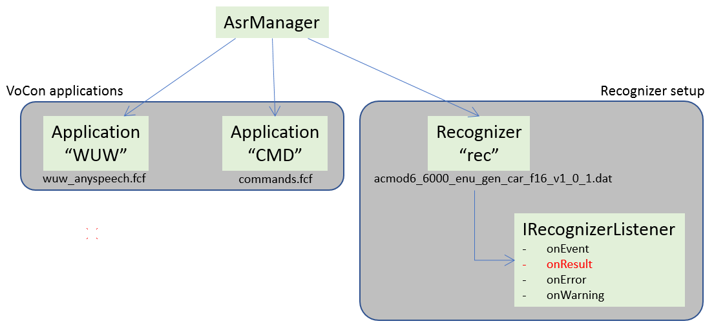

High-level description
Cerence ASR uses an “ASR Application”-based approach to ASR. An ASR application describes a phase during a recognition session. A recognition session is the time where a recognizer is actively listening to its audio input, the period between calls to:
nuance_asr5_IRecognizer_start(recognizer);
and:
nuance_asr5_IRecognizer_stop(recognizer);
Right after the call to nuance_asr5_IRecognizer_start(), the
recognizer might be listening for a wake-up word. This would be the
first phase of the recognition session; call it the “WuW-phase”. If at
some point a wake-up word is detected, then the recognizer might
switch to listening for a command. This could be called the
“command-phase”. Then, after processing the command (or after stopping
to listen for it due to a timeout), the system might enter the “WuW
phase” phase again.
In this sense, there may be many phases that a recognizer can enter into and switch between. Phases might even overlap or run in parallel: you can do local recognition (WuW and/or other) in parallel with cloud recognition.
Managers
Cerence ASR relies on a few coordinating components, that together manage all aspects of an ASR application. They are the System Manager, the Audio Manager, and the ASR Manager:
System Manager (
ISystemManager) is responsible for the instantiation and configuration of all objects that are common over all NDS components (e.g. logging, threading, timing).API reference: ISystemManager
Audio Manager (
IAudioManager) is the central management instance of the SDK’s audio framework. It is responsible for instantiating and setting up all audio backbone components. This includes for instance the creation of the chunk and codec pool for the audio modules.API reference: IAudioManager
ASR Manager (
IAsrManager) manages the ASR components: the recognizer itself, and its configuration setup (applications, dynamic content consumers, etc).API reference: IAsrManager
When these managers are created, they will scan the application’s JSON configuration directory, and load all configuration relevant for them. Based on the configuration, all necessary sub-components will be created and configured. The fact that this is handled internally takes away a lot of the tedious boilerplate work from the developer.
Listeners
Due to the asynchronous nature of Cerence ASR, many components use a “callback” or “listener” style interface for returning statuses to the calling systems.
In a listener-style interface, the part of the system that calls a certain component will provide one or more callback functions, with a fixed function signature, to the component. The component will then call these functions when certain events happen.
As an example, consider the IRecognizerListener interface. When a
recognizer is created, it takes a set of functions as one of the
arguments when it is created:
struct _vtable_nuance_asr5_IRecognizerListener
{
FUNC_nuance_asr5_IRecognizerListener_onEvent onEvent;
FUNC_nuance_asr5_IRecognizerListener_onResult onResult;
FUNC_nuance_asr5_IRecognizerListener_onError onError;
FUNC_nuance_asr5_IRecognizerListener_onWarning onWarning;
};
The onEvent, onResult, onError and onWarning functions
are implemented by the application. After creating the recognizer, and
starting the recognition, whenever a recognition event occurs, the
recognizer will call the onEvent callback with a specification of
the event. The implementation of onEvent will then specify what
happens with the event. Similarly, whenever a result is produced, the
recognizer will call the onResult event, and the implementation of
the onResult function will handle the actual result.
One major consequence of this style of programming, is that the code that creates a listener-enabled component must be prepared to handle message-passing between threads, and thus also ensure thread-safety.
It will often be the case that the component that uses callback
functions will run in a different thread from the code that created
the component. For example, suppose that a recognizer is started in
the application’s main thread. Starting this recognizer will set up a
separate recognition thread, which runs the recognizer code. When a
recognition event occurs, the recognizer will call the onEvent
callback in the IRecognizerListener. The onEvent function will
be called inside the recognizer’s thread, and execute there. If there
is a need to pass this information to the application’s main thread, a
thread-safe mechanism must be used to do this.
In the one-shot wake-up word sample, a simple thread-safe event queue is used to manage this communication.
Section Listeners has more details about listeners. You can find the API reference here: IRecognizerListener.
General recognition flow
Suppose we have a very simple setup with two ASR applications:
- A “WUW” application, which uses a very small context, specifically to recognize the device’s wake-up word.
- A “CMD” application, which uses a command & control context that contains a (potentially complex) setup for recognizing a set of commands.
We want to alternate these applications: when the recognizer is listening for the wake-up word, it should ignore commands, and conversely, when the recognizer is listening for commands, it should not react when it hears the wake-up word.
The base state of the components in this systems is shown here:
{kind=link}
The two applications are loaded, and available in the ASR manager. The recognizer is also ready. Out of the box, though, no applications are configured on the recognizer.
Just before recognition starts, the “WUW” application is
activated. This is done with the API function
<AsrManager>.setApplications(...). The “WUW” application contains
a context setup that is specifically intended to look for a wake-up
word in a speech stream. The activation process will load the context
configuration of the application onto the Cerence ASR recognizer. At this
point, the “CMD” application is not activated; the recognizer will not
recognize any commands:
{kind=link}
At point (1), time 0, the recognizer will begin receiving audio from
the input device, and start looking for the wake-up word. Remember
that the context wuw_anyspeech.fcf is loaded on the recognizer:
At point (2), the wake-up word is detected. The “WUW” application will produce a result, containing the detected wake-up word phrase, the confidences, etc. The recognizer then deactivates the currently-active applications (in this case only “WUW”), and will pass the result to the installed onResult callback. The callback will then decide what to do with this result.
If the result is accepted, it will activate the “CMD” application in
the recognizer, to proceed to the command & control recognition
phase. Deactivating the “WUW” application will cause
wuw_anyspeech.fcf to be unloaded from the recognizer. Subsequently
activating the “CMD” application, will cause the commands.fcf
context to be loaded on the recognizer:
{kind=link}
If, however, the wake-up word result is not accepted, the “WUW”
application will be re-activated, re-loading the wuw_anyspeech.fcf
context. The recognizer will then return to listening for the wake-up
word.
In the example, the wake-up word is accepted, and the recognizer
proceeds to listening for the command. Activation of the “CMD”
application will cause the commands.fcf context to be loaded on
the recognizer.
If the recognizer then finds a match (point (3)), the recognizer will
deactivate the applications and return a result. The onResult
callback will then act on the result, and reactivate the “WUW”
application to start listening for the wake-up word again.
The deactivation and activation of contexts happens while the recognizer is consuming audio. The recognizer makes sure that no audio samples are dropped while the reconfiguration takes place.